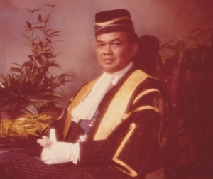

YAYASAN TUN ABDUL HAMID · 1996—2026
A Legacy of Service.
A Future of Opportunity.
Advancing legal education, recognising academic excellence and extending meaningful assistance to those in need.
30YEARS1996—2026
01 / 07
THIRTY YEARS OF SERVICE
Founded to honour a life devoted to law and public service.
Established on 9 November 1996, Yayasan Tun Abdul Hamid furthers legal education through financial assistance, academic awards and institutional partnerships, alongside a humanitarian mission to relieve suffering and improve quality of life.
Read our historyOUR WORK
Creating opportunity.
Recognising excellence.
Our programmes are built around a simple principle: education can change a life, and meaningful assistance should preserve dignity.
LEGAL EDUCATION
Opening doors to the study of law.
Cash bursaries, laptops and educational assistance for undergraduate law students who need support.
ACADEMIC EXCELLENCE
Celebrating those who excel.
Long-running awards with the Legal Profession Qualifying Board, UUM and UniSZA recognise outstanding achievement in law.
SMALL STEPS
Charity wrapped in dignity.
Gentle acts of practical help, with publicity intentionally kept to a minimum to protect the dignity and privacy of recipients.
SUPPORTING EXCELLENCE SINCE 1997
1997→2026
The Best Overall Student in the Certificate in Legal Practice.
YTAH is the sponsor of the prestigious annual prize, currently valued at RM10,000, for the highest-performing eligible CLP candidate.
View recipient archive ↗SMALL STEPS
“Charity wrapped in dignity.” Amal yang disampul dengan maruah.
Not every act of charity needs an audience. Small Steps reflects YTAH’s belief that assistance can be meaningful, personal and quiet. Photographs and publicity are deliberately kept to a minimum.
Discover Small Steps
Tun Abdul Hamid Omar1929—2009
THE FOUNDER
A life of law, public service and enduring responsibility.
Tun Dato’ Seri Haji Abdul Hamid bin Haji Omar was called to the English Bar in 1955, appointed a High Court judge in 1968 and retired as Chief Justice of the Federal Court in 1994. He chaired YTAH from its inception in 1996 until 2009.
His belief in continuity remains part of the foundation’s story.
1996—2026
Thirty years, one continuing purpose.
1955
Called to the English Bar
Tun Abdul Hamid was called to the English Bar as a Barrister-at-Law of The Honourable Society of Lincoln’s Inn, London.
STORIES & ARCHIVE
An institutional memory, not just a news feed.
The final site can migrate YTAH’s historical WordPress posts into a clean, searchable archive organised by year and programme.
GOVERNANCE
Stewardship across generations.
The redesigned site separates current leadership, members and advisers from the historical record, while keeping governance information easy to find.